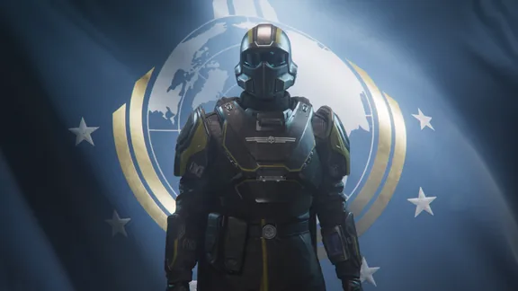
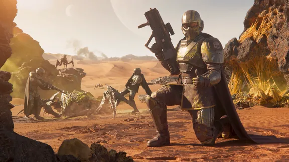
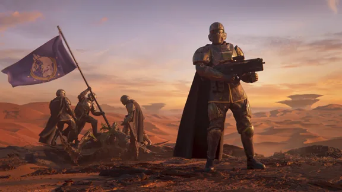
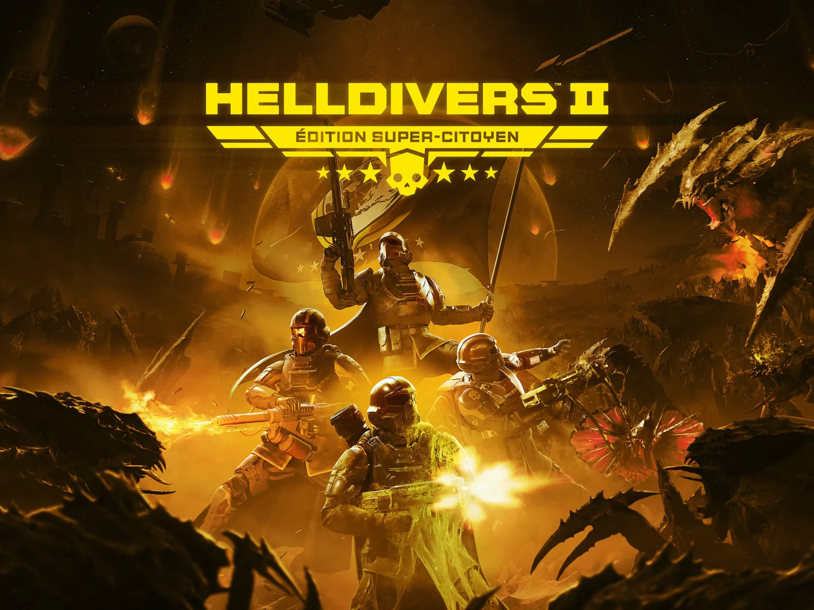
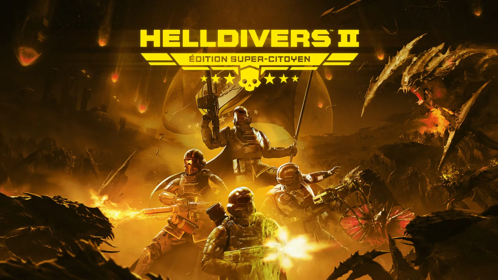
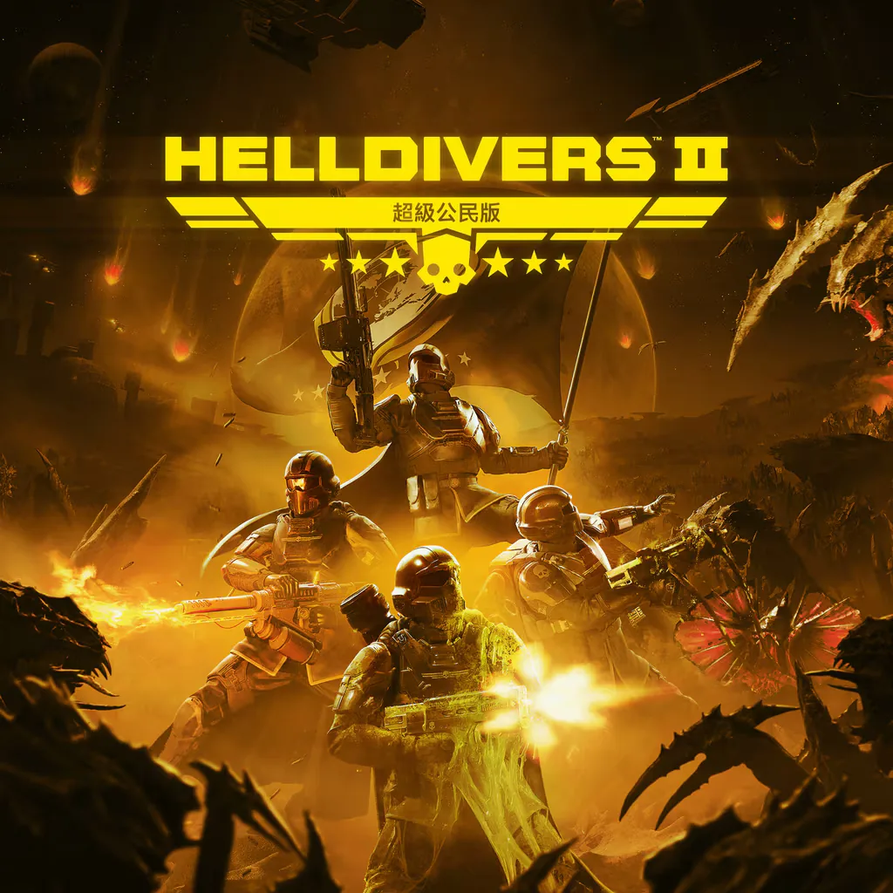
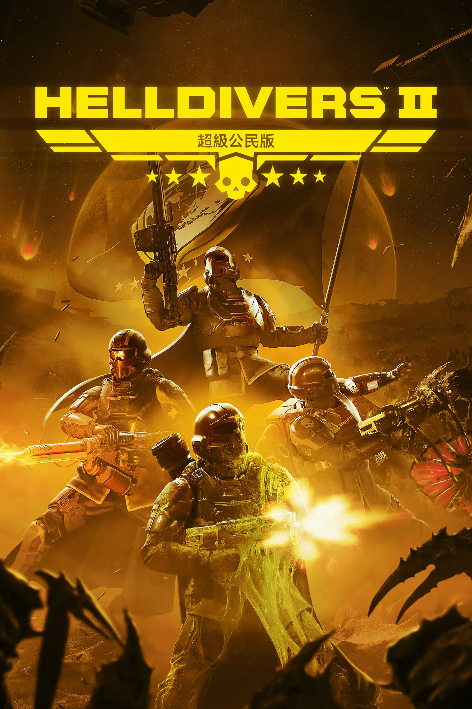
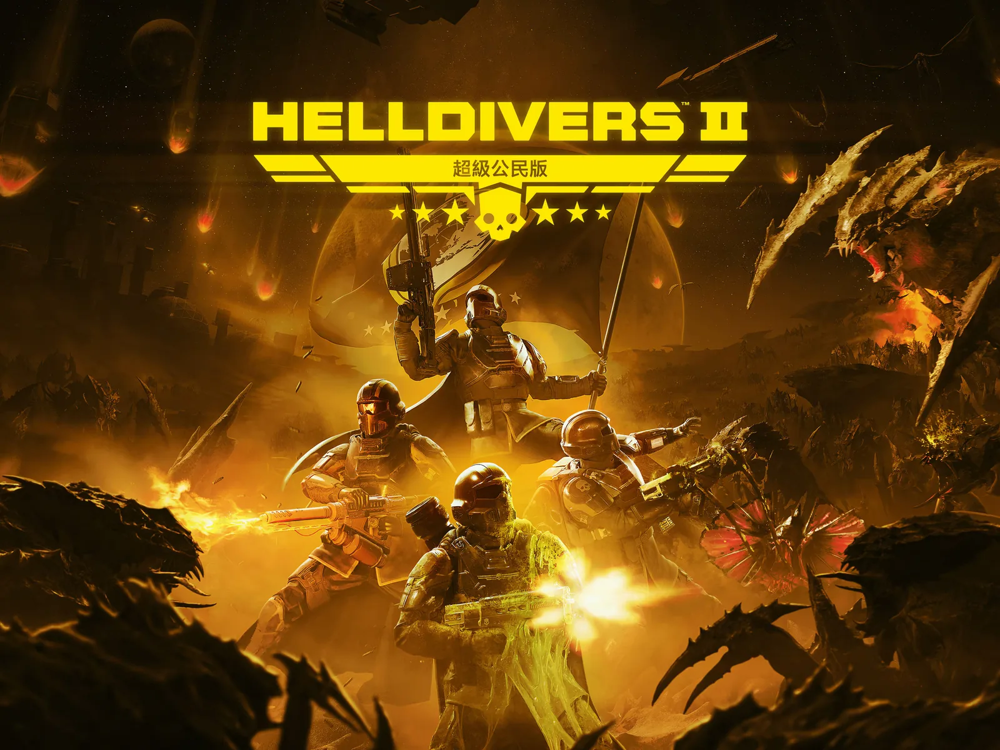
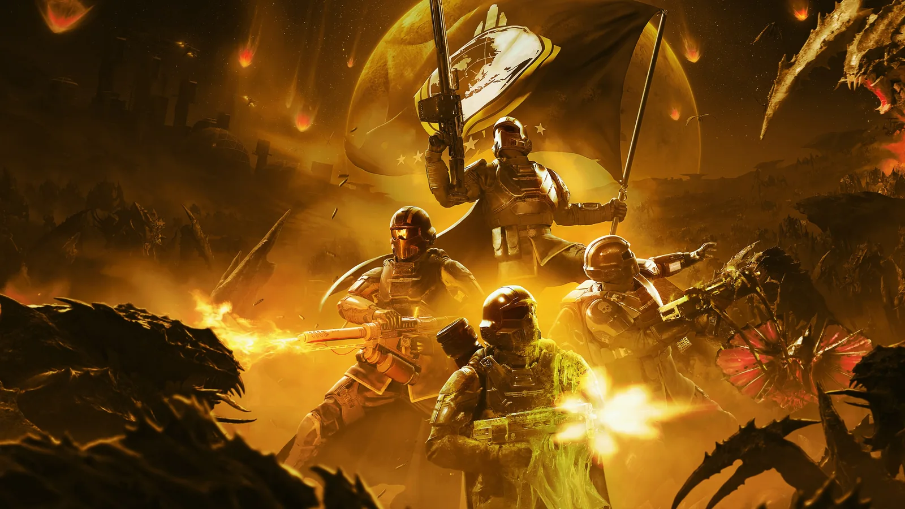

Thumbs Up
绝地潜兵2
绝地潜兵™ 2 is a third person squad-based shooter available on PS5, Xbox Series X|S, 和 Windows 10+ via Steam.
关于本游戏
紧急广播
Freedom. Peace. Democracy.
Your 超级地球-born rights. The key pillars of our 文明.
Of our very existence.
But the war rages on. And everything is once again under 威胁.
Join the greatest 军事 force the galaxy has ever seen and make this a safe and free place to live.— 超级地球 武装力量
成为传奇
- You will be assembled into squads of up to four 绝地潜兵 and assigned strategic missions. Watch each other's back—友军误伤 is an unfortunate certainty of war, but victory without teamwork is 不可能.
装备配置
- Rain down freedom from above, sneak through enemy 领土, or grit your teeth and charge head-first into the jaws of combat. How you 运送 liberty is your choice; you'll have access to a wide array of 爆炸 火力, life-saving 护甲 and battle-changing 战略配备… the jewel in every 绝地潜兵's arsenal.
申购点
- 超级地球 recognises your 困难 work with valuable 申购点. Use it to access different 奖励 that 受益 you, your squad, your 驱逐舰 ship and our overall war effort.
威胁
- Everything on every 行星 wants you dead. That's what we're 应对. Each enemy has distinct and unpredictable characteristics, 战术, and 行为—but they all fight ferociously and without fear or morality.
the 星系战争
- Capturing enemy planets, defending against invasions, and completing missions will 贡献 to our overall effort.
- This war will be won or lost depending on the actions of everyone involved.
- We stand together, or we fall apart.
什么是 绝地潜兵 2?
Do you believe in freedom? Can you stand in the face of 压迫—and defend the defenseless? Wage war for peace. Die for democracy.
Join forces with up to three friends and wreak havoc on an alien scourge threatening the safety of your home 行星, 超级地球.
Step into the boots of the 绝地潜兵, an elite 级别 of soldiers whose 任务 is to 散射 peace, liberty and 管理式民主 using the biggest, baddest and most 爆炸 tools in the galaxy.
绝地潜兵 don't go 行星 侧面 without proper backup, but it's up to you to decide how and when to call it in. Not only do you have a host of super-powered 主武器 and customizable loadouts, you also have the 能力 to call on 战略配备 during play.
绝地潜兵 2 features Arrowhead's best cooperative 玩法 yet. 协作 will be vital: Teams will synergize on loadouts, strategize their approach for 每次任务 and 完成 目标 together.
Enlist in 超级地球's premier 军事 peacekeeping force today. We are heroes… we are legends… WE ARE 绝地潜兵.
为什么你应该开始游戏 绝地潜兵 2
为超级地球而战！
- Freedom. Peace. 管理式民主. Your 超级地球-born rights. The key pillars of our civilisation are 遭受攻击 from deadly alien creatures conspiring to 摧毁 your 行星 and its values.
- The 绝地潜兵 must take on the role of peacekeepers in this 星系战争 and 保护 their home 行星, 散射 the message of Democracy and repel the hostiles by force.
使用超强武器！
- Decide how to 击倒 each enemy surge using a multitude of 进攻型 and 防御型 tools.
- Need to 干掉 a 庞大 onslaught of 终结族 in one go? 掉落 a 500KG炸弹, leaving behind only liberated bug corpses. Need to lay down a 防御型 perimeter? Bring in an 反步兵地雷布设器 to boobytrap the battlefield.
- As you 完成 missions, you can 升级 your ship and build an even more 出色 arsenal. Everything from 盾雷发生器, to 炮塔, to large-scale 空袭 can be used to give your team the upper hand.
仔细瞄准！
- They say everything is better with friends, especially when it comes to raining 摧毁 down on the 敌人 of Liberty! Be warned though: for 最大 挑战 and 协作, 友军误伤 is always on. Communicate with your squadmates and make sure your arsenal only 击倒 your adversaries.
剧情
To find out more about the world of 绝地潜兵 2, read the 背景…
Set a 世纪 after 超级地球's 的胜利 in the 第一次银河战争 against the 虫族, 生化人，以及 光能者. The 联邦 covets a unique and highly valuable 资源: E-710 derived from the 终结族. Humans hold lucrative farms and labs across their colonized planets, but containment was eventually breached—unleashing the 终结族 scourge that plunged these lands into chaos and ruin. As if that weren't enough, a new menace arose: the 机器人, a relentless 机械 army hell-bent on 人类's annihilation. Enter the 绝地潜兵—elite 电击 troops, summoned by a gripping recruitment video,[1] deployed from orbit to reclaim what is stolen and liberate who is oppressed. The game's immersive 宇宙 unfolds through environmental storytelling, with scattered logs, 备注, and 宣传 绘画 a vivid 图片 of the struggle. Its narrative evolves through community-driven 主要命令, uniting 'divers in a collective 任务.
媒体
- 绝地潜兵 2 - 官员 Launch Trailer
Error
Asset 合集 not found for: '绝地潜兵2'. Check 文档 to 确认 it exists.





Store Banner

琐事
- According to Johan Pilestedt, former CEO and now CCO of Arrowhead, the development of 绝地潜兵 2 took 7 years, 11 month and 26 days - twice as long as originally planned.[2]
- Development of the game was in full swing when Autodesk Stingray, the game engine used by 绝地潜兵 2, was discontinued.[3]
- Originally the game was designed for 5 玩家, according to Patrik Lasota, head of 产品 testing. However, this created issues with one player often just standing around and not really participating in the action. It furthermore gave the squad flexibility and made it less 重要 which 战略配备 to pick. In the end it was decided to reduce the squad to 4 玩家 to avoid 玩家 idling.[4]
- Another early design idea were planets with 低重力 which would affect jumping height and give the 能力 to float. It was ultimately cancelled since this would've added a lot of extra work for the animators.[4]
- In a Discord post, Pilestedt revealed that Arrowhead had earlier designs that made helmets a key part of the player's 武装配置. Originally they had unique HUDs, which would medics allow to see 生命值, recons would see enemy outlines, etc. Due to time constraints this idea did not make it into the final release of the game.[5]
参考资料
- ↑ INTRO CINEMATIC - 绝地潜兵™ 2
- ↑ PCGamer.com - Arrowhead initially planned to make 绝地潜兵 2 in 3 years—instead it took 7 years, 11 months, and 26 days, but 'grit, camaraderie and compassion' saw the team through
- ↑ X - Post by Johan Pilestedt
- ↑ 4.0 4.1 Gamingbolt.com - 绝地潜兵 2 Was Originally Designed for Five-Player Squads
- ↑ PCGamer.com - Arrowhead CEO says 绝地潜兵 2 was going to have helmets with bespoke HUD elements like enemy outlines—but they were cut due to 'well, having to ship the game'